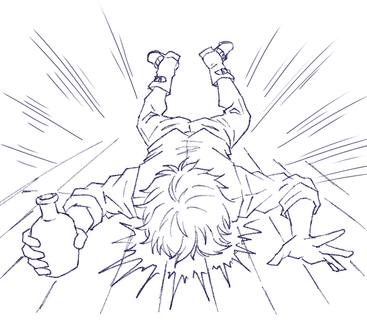
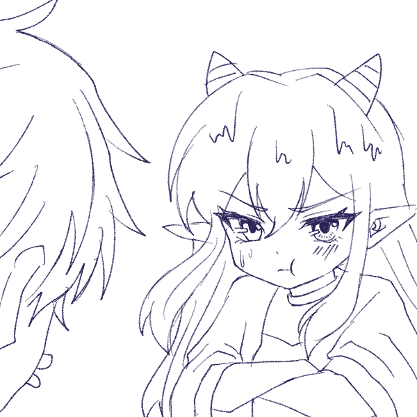

夜が長くなってきた頃。
魔導書店の扉には『Closed』という札が掛けられていた。
元々趣味の延長で経営している魔導書店なので、営業時間も営業日もベルミラの気まぐれ。
しかし今日はベルミラ以外の人間が店内にいるようだ。
・・・
「ベルミラさぁん、この本はどこに置きますか？」
「それは…結界術だから向こうの方ね」
「了解っす」
カイルだった。
最近さらに本が増えてきたらしく、在庫整理に駆り出されたようだ。
「えぇっと…このへんかな」
指示された場所に本を運んだところで、足元に木箱が置かれているのが目に入った。
「なんだこれ？……もしかして、お宝かな？」
手伝ってるんだから何か一つぐらいお礼をもらったっていいだろう、高そうな物なら「これがいい」って言ってみよう。
木箱を開けてみると、紫色の液体が入ったガラスの小瓶が入っていた。ラベルも何もないので何の液体なのかも分からない。
「うーん？あんまり金にならなさそうだな…」
期待外れ、と言わんばかりにため息をつくカイル。
「ここにあっても仕方ないよな」
カイルは小瓶を持ってベルミラに歩み寄る。
「ベルミラさん、これってどこに……っ」
足元の積み重ねられた本に気づかず、足を取られる。
その拍子に外れる小瓶の蓋。飛散する液体。その先には―――ベルミラ。

転ぶカイルまずい、と思ったときにはもう遅かった。
カイルは大きな音を立てて転び、慌てて立ち上がろうとした。
「ベルミラさんッ、すみまっ……」
上半身しか起こしていないはずなのに、立っているはずのベルミラと目が合った。
「……やってくれたわね」

小さくなったベルミラカイルの目の前にいるのは、ベルミラ…によく似た女の子だった。
「……えっ」
女の子は長いため息をついた。
「それ、子どもになっちゃうくすりなのよ」
「え、もしかして、ベルミラさん？」
「ほかにだれがいるっていうのよ」
子供になって舌っ足らずになったベルミラは、小さくなった体で必死に不満を訴えているがちっとも迫力がない。
「まほうもつかえないし、こうかがきれるのをまつしかないわね」
「かわいい（かわいい）」
「は？」
「なんでもないです」
「きょうはもうおしまい。カイル、せきにんとっておせわしてよね」
「え？」
「『え？』じゃないわよ。あたりまえでしょう？」
そもそも日頃から整理しておけば…、俺に手伝わせなければこうならなかったのでは、と言いかけたのをぐっと堪えた。
「…ワカリマシタ」
・・・
カラン、と扉の鐘が鳴る。
「ベルミラ姉さーんっ、遊びに来たよーっ」
ルーだ。
「ルー、いらっしゃい、わるいけどきょうは…」
「えっ、ベルミラ姉さん！？」
「あ、これは俺が…」
「やだ超かわいいー！！！！！」
ルーはカイルのことを無視して、小さくなったベルミラを抱き寄せて頬ずりする。
「やめてよ」
「やめなーい、で、どうしたの、これ？」
「そこにいるおまぬけさんが、わたしにこどもかのくすりをぶっかけちゃったのよ」
「おまぬけさーん、でも、グッジョブだよー」
ルーは嫌がるベルミラを抱きかかえながらニコニコしている。
「そんなにかわいいなら、ルーが代わりに面倒見てやってくれないか？」
「そうしたいのは山々なんだけど…この後用事があるんだぁ」
名残惜しそうにベルミラの頬をもう一度だけ撫でると、ルーは扉の鐘を鳴らして去っていった。
店内には、幼くなったベルミラと、途方に暮れるカイルだけが残される。
「……というわけで、あなたがめんどうをみるのよ」
「え、俺っすか」
「あたりまえでしょ、げんいんはあなたなんだから」
じとっとした上目遣いで見上げられると、これがまた妙に効く。
大人の姿の時の睨みとは違う種類の圧に、カイルは思わず「ワカリマシタ」と頷くしかなかった。
・・・
とはいえ、いざ面倒を見るとなっても、カイルにできることはそう多くない。
本棚の上の方に置かれた道具を取ってあげたり、台所に立って見様見真似の夕飯を用意したり――その程度だ。
「にんじん、きらいなんだけど」
「好き嫌い言わない。頑張って食べてください」
「……ふん」
そう言いつつも、ベルミラは小さな手でぎこちなくスプーンを動かし、ちゃんと平らげていた。
入浴も、思いのほかあっさり一人でこなしてしまう。
子供の姿になっても、中身は変わらず年上のベルミラなのだと、カイルは妙なところで実感した。
さて、あとは寝るだけ――というところまで来て、カイルはベルミラを部屋まで送り届けた。
「じゃあ俺は店の床で転がってるんで、何かあったら呼んでください」
そう言って離れようとした瞬間、服の裾をきゅっと引かれる。
振り返ると、ベルミラが小さな手でカイルの服を掴んだまま、離そうとしない。
「まだ何か用事ありました？」
問いかけると、いつも気の強いベルミラには珍しく、もじもじと視線を彷徨わせる。
そうしてしばらく黙り込んだあと、消え入りそうな声でぽつりとこぼした。
「……ねるまで、おなじへやにいて」
想像していなかった言葉に、カイルは一瞬固まる。
――身体だけじゃなく、精神面まで若返ってるのか？
そう考えると、無下に突き放すのも気が引けた。
何より、裾を掴む小さな手を振り払うほど、カイルも薄情ではない。
「……わかったっす」
ベッドの端に腰掛け、カイルはそのままベルミラが眠りにつくのを見守ることにした。
規則正しい寝息が聞こえてくるまで、そう長くはかからなかった。
だが、昼間の在庫整理の疲れが今頃になって押し寄せてきたのか、カイルの瞼も次第に重くなっていく。
――ちょっとだけ、目を閉じよう。
そう思ったのが最後、カイルもベッドの脇にもたれかかったまま、うたた寝してしまった。
・・・
翌朝。
差し込む朝日にまぶたを刺激され、カイルはゆっくりと目を覚ます。
首を回すと、隣には見慣れた姿のベルミラが、静かな寝息を立てていた。
……戻ってる。
昨夜の小さな体はどこにもなく、そこにいるのはいつも通りの、大人のベルミラだった。
カイルはほっと息を吐きながら、思わず笑みをこぼす。
「やっぱりベルミラさんは、いつもの姿の方がいいっす」
その呟きは、まだ夢の中のベルミラには届かなかった。